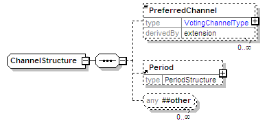
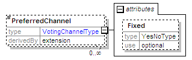

| diagram |  | ||
| namespace | urn:oasis:names:tc:evs:schema:eml | ||
| children | PreferredChannel Period | ||
| used by |
|
||
| source | <xs:complexType name="ChannelStructure"> <xs:sequence> <xs:element name="PreferredChannel" minOccurs="0" maxOccurs="unbounded"> <xs:complexType> <xs:simpleContent> <xs:extension base="VotingChannelType"> <xs:attribute name="Fixed" type="YesNoType" use="optional"/> </xs:extension> </xs:simpleContent> </xs:complexType> </xs:element> <xs:element ref="Period" minOccurs="0"/> <xs:any namespace="##other" minOccurs="0" maxOccurs="unbounded"/> </xs:sequence> </xs:complexType> |
| diagram |  | ||||||||||||||||||||||||||||||
| namespace | urn:oasis:names:tc:evs:schema:eml | ||||||||||||||||||||||||||||||
| type | extension of VotingChannelType | ||||||||||||||||||||||||||||||
| properties |
|
||||||||||||||||||||||||||||||
| facets |
|
||||||||||||||||||||||||||||||
| attributes |
|
||||||||||||||||||||||||||||||
| source | <xs:element name="PreferredChannel" minOccurs="0" maxOccurs="unbounded"> <xs:complexType> <xs:simpleContent> <xs:extension base="VotingChannelType"> <xs:attribute name="Fixed" type="YesNoType" use="optional"/> </xs:extension> </xs:simpleContent> </xs:complexType> </xs:element> |
| type | YesNoType | |||||||||
| properties |
|
|||||||||
| facets |
|
|||||||||
| source | <xs:attribute name="Fixed" type="YesNoType" use="optional"/> |